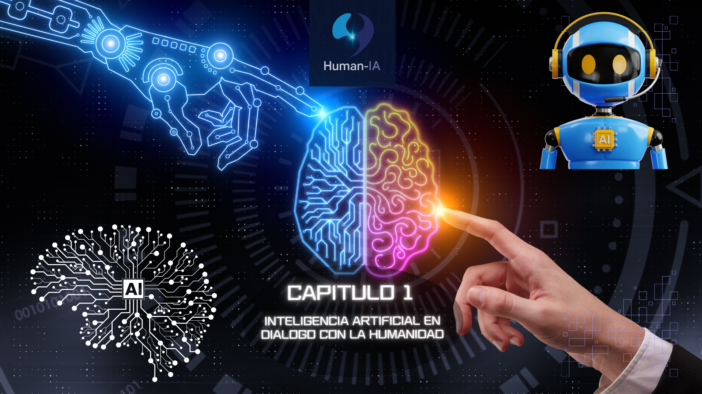

Explorando el impacto de la Inteligencia Artificial en la sociedad, la tecnología y la innovación.
Human-IA: Tu Revista Digital nace como una invitación a repensar la relación entre la inteligencia artificial y la humanidad.
Es mucho más que una publicación: es un puente entre la tecnología emergente y las preguntas esenciales sobre quiénes somos, qué creamos y hacia dónde vamos. Cada edición es un espacio curado para explorar, imaginar y cuestionar el papel de la IA en nuestra cultura, nuestra ética y nuestras aspiraciones colectivas. No buscamos solo informar, sino provocar conversaciones, abrir ventanas a posibilidades y acompañar a los lectores en el desafío de integrar la inteligencia artificial en sus vidas de manera consciente y crítica.
En sus páginas encontrarás una diversidad de perspectivas y voces:
✅ Una carta del editor que traza el hilo conductor de cada número, abriendo la reflexión sobre un tema central y su resonancia en nuestro tiempo.
✅ Artículos temáticos que desmenuzan las aplicaciones de la IA en sectores como la salud, la educación, la industria, el arte y la vida cotidiana, acercando el conocimiento técnico a un lenguaje accesible y humano.
✅ Una columna polémica que desafía al lector con dilemas éticos, preguntas incómodas y debates abiertos sobre los límites y responsabilidades de las tecnologías autónomas.
✅ Un espacio de análisis de datos que muestra cómo la inteligencia artificial lee, interpreta y transforma la información, revelando patrones ocultos y nuevas formas de comprender el mundo.
✅ Una sección práctica dedicada a herramientas accesibles, consejos y guías para que cualquier persona, experta o no, pueda empezar a explorar y utilizar la IA en su vida diaria.
✅ Un laboratorio creativo, donde la inteligencia artificial se convierte en coautora de narrativas, poemas, cuentos y piezas artísticas que expanden nuestra imaginación y desdibujan los límites entre lo humano y lo artificial.
✅ Y finalmente, una sección de Tips Human-IA, ubicada al cierre de la revista, que entrega recomendaciones aplicables y éticas para integrar la inteligencia artificial en la vida cotidiana, con ejemplos claros y prácticos.
Human-IA no pretende sustituir la creatividad ni la mirada crítica del ser humano. Al contrario: la amplifica, la desafía, la inspira. Este proyecto es un testimonio vivo de cómo la tecnología puede ser aliada del pensamiento profundo, del arte, de la educación y del espíritu transformador de la sociedad.
Cada página es una invitación a descubrir, cuestionar y co-crear. Porque la inteligencia artificial, más que una herramienta, es ya una conversación abierta entre algoritmos y humanidad.
Escucha nuestras reflexiones, entrevistas y debates sobre esta edición de Human-IA.
